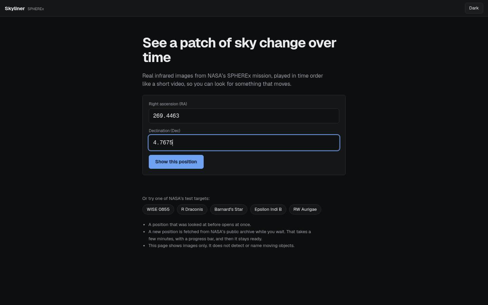

NASA Space Apps Challenge 2026
Skyliner
Team FixThisNoMistake
Challenge 12: Planet X and SPHEREx
The whole sky, every six months
102 infrared bands
0.75 to 5.0 micrometres
15 Aug 2025
5 May 2026
262 days later
same patch of sky
Barnard's Star, detector D6
real SPHEREx data
Barnard's Star, detector D6
real SPHEREx data

an example run
0 of 44 images
read from NASA's public archive
8.5 minutes, shown sped up
Real SPHEREx data
Frame 1 of 39
2025-08-15
Time runs left to right.
Every tick below is one real image. Nothing is added to fill a gap.
Every tick below is one real image. Nothing is added to fill a gap.
Viewer only: you decide what moves.
Skyliner
Public NASA data. Open tools.
Team FixThisNoMistake | NASA Space Apps Challenge 2026 | Challenge 12: Planet X and SPHEREx
Images: NASA SPHEREx data from the NASA/IPAC Infrared Science Archive (IRSA) | Open source, MIT license
Voice: Underdog Woof (underdog.ai), SI-generated speech
This video was made with SI assistance (Claude Sonnet 5.5 through Claude Code)
Images: NASA SPHEREx data from the NASA/IPAC Infrared Science Archive (IRSA) | Open source, MIT license
Voice: Underdog Woof (underdog.ai), SI-generated speech
This video was made with SI assistance (Claude Sonnet 5.5 through Claude Code)
SkylinerSPHEREx
NASA Space Apps Challenge 2026
SI-generated video and voice